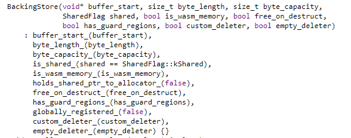

Chromium RCE - v8 exploitation
Event: TCTF 2020 Quals
Problem Statement: It's v8, but it's not a typical v8, it's CTF v8! Please enjoy pwning this d8 :)
INTRODUCTION
On 27.06.2020 I participated in TCTF 2020 Quals with PwnThyBytes where we ranked #17. Like always, a great CTF with cool challenges. However, because I had some exams that overlapped with the competition I couldn't participate for the entire period of it. During the CTF I tried an interesting challenge which I will try to explain in this blog post.
In this challenge we are given a modified version of d8 which is running on a server with the purpose of being exploited in order to gain Remote Code Execution.
The archive associated with the challenge consist of a patch file (tctf.diff) and the d8 executable.
PATCH ANALYSIS
Analyzing the tctf.diff file, we can see that some changes have been made to typed-array-set.tq such that the check inside the TypedArray.prototype.set method was removed.
Now what does this mean? In order to explain how this patch affects the security of d8, let's have a look at a simple example:
-
var a = [1,2,3]; Variable a is a JSArray. The way v8 handles this internally is by creating a so called Hidden Class (also known as Map / Shape). This class is shared with all objects that have the same structure / shape.
But all the actual elements of the array are stored in a separate Elements Backing Store. The Backing Store only stores the values.
So, whenever a JSArray holds a refference to the Backing Store it is Attached. When it loses the refference it is Detached.
For more information on this topic, I strongly recommend this video.
Now, what is the difference between an Array (JSArray) and an ArrayBuffer (JSArrayBuffer)?
An ArrayBuffer is more than just a simple array. It contains raw binary data. This is very useful for direct memory manipulation and conserving space.
When you create a normal array, you won't get a proper set of contiguous memory in many cases since arrays can contain any combination of different kinds of objects
With an ArrayBuffer, you have the option of moving through that data on the byte level by using Views:
- Typed Arrays (Uint8Array, Int16Array, Float32Array, etc.) interpret the ArrayBuffer as an indexed sequence of elements of a single type.
- Instances of DataView let you access data as elements of several types (Uint8, Int16, Float32, etc.), at any byte offset inside an ArrayBuffer.
Getting back to the patch, it is now clear what a Typed Array is and how the security is affected by allowing the user to use .set() on a detached ArrayBuffer (Use After Free).
var a = [1,2,3]; Variable a is a JSArray. The way v8 handles this internally is by creating a so called Hidden Class (also known as Map / Shape). This class is shared with all objects that have the same structure / shape.But all the actual elements of the array are stored in a separate
Elements Backing Store. The Backing Store only stores the values. So, whenever a JSArray holds a refference to the Backing Store it is
Attached. When it loses the refference it is Detached. For more information on this topic, I strongly recommend this video.
Now, what is the difference between an Array (
JSArray) and an ArrayBuffer (JSArrayBuffer)?
An ArrayBuffer is more than just a simple array. It contains raw binary data. This is very useful for direct memory manipulation and conserving space.
When you create a normal array, you won't get a proper set of contiguous memory in many cases since arrays can contain any combination of different kinds of objects
With an ArrayBuffer, you have the option of moving through that data on the byte level by using Views:
Getting back to the patch, it is now clear what a - Typed Arrays (Uint8Array, Int16Array, Float32Array, etc.) interpret the ArrayBuffer as an indexed sequence of elements of a single type.
- Instances of DataView let you access data as elements of several types (Uint8, Int16, Float32, etc.), at any byte offset inside an ArrayBuffer.
Typed Array is and how the security is affected by allowing the user to use .set() on a detached ArrayBuffer (Use After Free).
There are a few more patches such as:
-
The native syntax is disabled (
%DebugPrint will not work ) except for %ArrayBufferDetach().
-
Imports are disabled.
However, when I built the d8.debug I removed the unnecessary patches and ended up with the following patchfile: my_patch.diff.
For a quick refference on how to build d8 from source, checkout @Faith's blog post
%DebugPrint will not work ) except for %ArrayBufferDetach().
EXPLOITATION
Alright, we now know what the vulnerability is, we just need a plan to build the exploit.
 After playing around with TypedArrays, I came to observe something very interesting.
After playing around with TypedArrays, I came to observe something very interesting.
For every new Typed Array ( new ArrayBuffer(SIZE) ), there are 4 allocations taking place:
calloc(SIZE) for the Data buffer.malloc(48) for the BackingStoremalloc(32) for the shared_ptrmalloc(40) for the ArrayBufferExtension
Whenever I detach an array ( %ArrayBufferDetach() ), the first 3 chunks are freed.
Now things are getting interesting. We can allocate, we can free and we have a UAF vulnerability.
It's starting to look like a classic heap exploitation on libc2.27.
After playing around with TypedArrays, I came to observe something very interesting.
For every new Typed Array (
Now things are getting interesting. We can allocate, we can free and we have a UAF vulnerability.
It's starting to look like a classic
For every new Typed Array (
new ArrayBuffer(SIZE) ), there are 4 allocations taking place: calloc(SIZE)for the Data buffer.malloc(48)for the BackingStoremalloc(32)for the shared_ptrmalloc(40)for the ArrayBufferExtension
%ArrayBufferDetach() ), the first 3 chunks are freed. Now things are getting interesting. We can allocate, we can free and we have a UAF vulnerability.
It's starting to look like a classic
heap exploitation on libc2.27.
1. Memory Leak
Obtaining a memory leak from a Heap UAF vulnerability is trivial. I won't get into many details on how heap chunks work (more information can be found here), but to remember is that once a heap chunk is freed, the fd and bk pointers are populated with appropriate addresses.
If we allocate a big enough chunk and then free it, the bk pointer will be overwritten with a libc address.
Hence the .set() method is still available for detached buffers, we can use it to copy the content of the buffer into an undetached buffer and then print it.
2. Memory Write
Now that we know where libc is, we automatically know where system() is located in memory. But how can we invoke it?
Let's have a closer look at the BackingStore class.
As we can see, inside the BackingStore class there is a flag variable named custom_deleter_, if we manage to set it, we can invoke a "custom" deleter.
Let's see how does the instance of the class looks like inside the memory.
How can we take control over a BackingStore structure?
The idea is to create an Array of size 48.
Then we detach it in order to free all the 3 chunks associated to it.
After that we create a new Array of size 32, thus retrieving 2 chunks used by the first Array.
After that, we allocate a new Array of arbitrary size but != 48.
This will trigger an interestnig situation where the buffer used for Array1 overlaps with the buffer used by the 3rd Array to store the BackingStore.
In other words, because we can still use .set() on detached array, we can basically overwrite the BackingStore and craft a custom one containing the flag set and the deleter pointing to system().
You can visualize step by step the attack on the left side, with a quick mention that at the last step the 3rd Array must be detached.
FLAG: flag{dbc68439ba5f2cdbccf459cd3edb54c80b9c89e9}
You can find my full exploit at: https://github.com/Fineas/Me-CTF/blob/master/Writeups/20-TCTF/solve.js
CONCLUSION
I hope you enjoyed the writeup. I really did my best to explain as well as I could.
I also plan to make a writeup for Chromium SBX challenge.
If you found any mistakes in the writeup, please let me know 😄
RESOURCES
- https://source.chromium.org/chromium/chromium/src/+/master:v8/src/builtins/typed-array-set.tq
- https://tc39.es/ecma262/#sec-isdetachedbuffer
- https://v8.dev/blog/pointer-compression
- https://faraz.faith/2019-12-13-starctf-oob-v8-indepth/
- https://fineas.github.io/FeDEX/post/chromatic_aberration.html